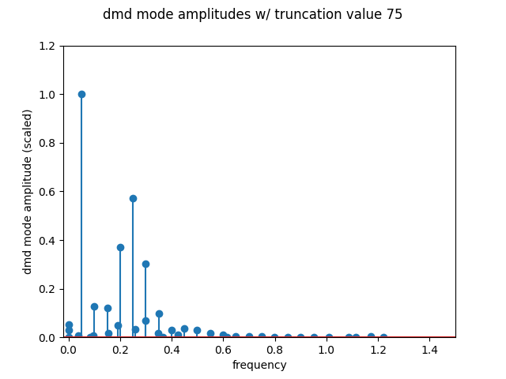
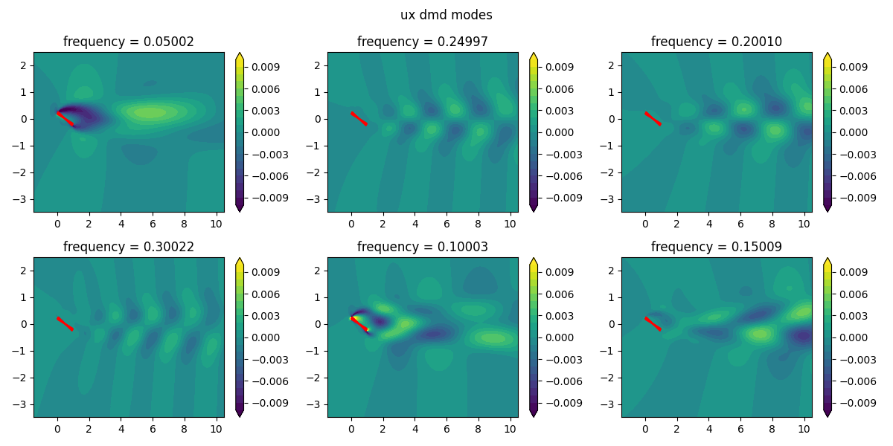
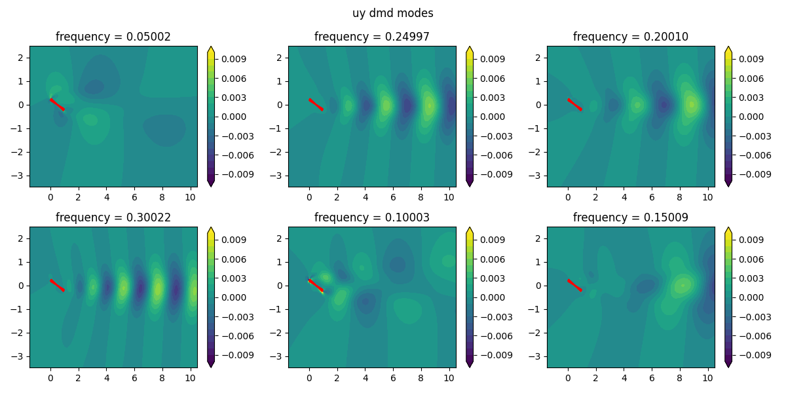
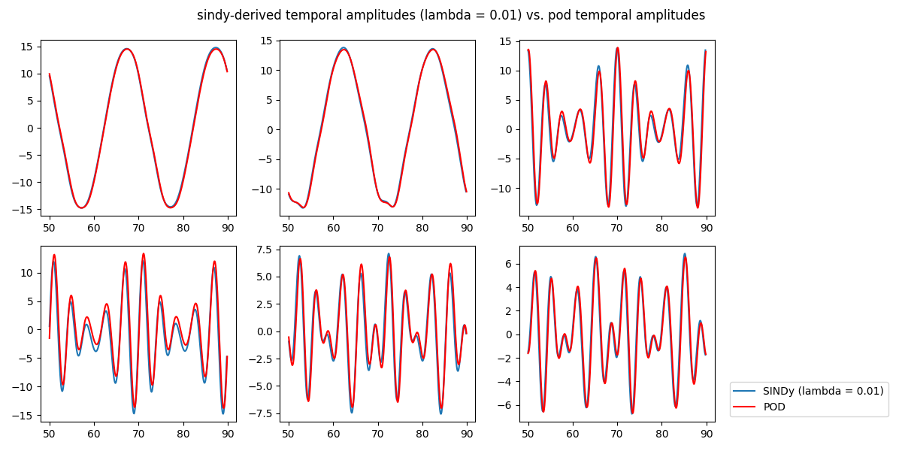

3 Data-Driven Dynamical Systems
3.1 Overview: Dynamic Mode Decomposition
Dynamic mode decomposition (DMD) is a dimensionality reduction technique developed in the fluid dynamics community to extract spatiotemporal coherent structures from high-dimensional data. Unlike principal component analysis (PCA) or proper orthogonal decomposition (POD), which focus solely on spatial correlations or energy content, DMD provides a modal decomposition where each mode is associated with a specific oscillation frequency and growth/decay rate. This allows DMD to capture the temporal evolution of the system, in addition to reducing the dimensionality. DMD achieves this by approximating the Koopman operator, which describes the linear dynamics governing the system, rather than just identifying the dominant spatial patterns like PCA/POD. As a result, DMD modes can be more physically meaningful than the orthogonal modes generated by PCA, as they directly correspond to the intrinsic temporal behaviors of the system.
DMD operates on a series of data snapshots, typically obtained from simulations or experiments. These snapshots are organized into a matrix \(\textbf{V}\), where:
\[ \textbf{V} = \left[ \textbf{v}_1 \quad \textbf{v}_2 \quad \cdots \quad \textbf{v}_N \right] \in \mathbb{R}^{M \times N}\]
Each \(\textbf{v}_i \in \mathbb{R}^M\) represents a snapshot at a specific time. DMD attempts to find a linear operator \(\textbf{A}\) that approximates the evolution of the system from one snapshot to the next.
First, the snapshot data is arranged into two matrices \(\textbf{X}\) and \(\textbf{X}'\), where \(\textbf{X}\) contains the first N-1 snapshots and \(\textbf{X}'\) contains the last N-1 snapshots.
The SVD of \(\textbf{X}\) is taken. To deal with high-dimensional data, a reduced order representation may be used, by truncating the SVD to the first \(r\) modes.
\[ \textbf{X} = \textbf{U} \Sigma \textbf{V}^* \approx \textbf{U}_r \Sigma_r \textbf{V}^*_r\]
The full matrix \(\textbf{A}\) is found by computing the pseudo-inverse of \(\textbf{X}\):
\[ \textbf{A} = \textbf{X}' \textbf{V}_r \Sigma_r^{-1} \textbf{U}_r^* \]
The next step involves computing the matrix \(\tilde{\textbf{A}}\), which is the projection of \(\textbf{A}\) onto the subspace spanned by the columns of \(\textbf{U}_r\).
\[ \tilde{\textbf{A}} = \textbf{U}_r^* \textbf{A} \textbf{U}_r = \textbf{U}_r^* \textbf{X}' \textbf{V}_r \Sigma_r^{-1} \]
Then, we “eigendecompose” (is that a word?) \(\tilde{\textbf{A}}\) to find its eigenvalues \(\Lambda\) and eigenvectors \(\textbf{W}\). These eigenvalues and eigenvectors are used to compute the DMD modes \(\Phi\), which are given by:
\[\Phi = \textbf{X}' \textbf{V}_r \Sigma_r^{-1} \textbf{W}\]
Notably, these high-dimensional DMD modes are also the eigenvectors of the full \(\textbf{A}\) matrix corresponding to the eigenvalues in \(\Lambda\).
3.2 DMD Analysis of Low Reynolds Number Pitching Airfoil DNS
We now return to the dataset analyzed using POD, but now we use the dynamic mode decomposition to analyze this data.
The modal amplitudes, and first six \(u_x\) and \(u_y\) modes are displayed below. It is clearly apparent that the modes are not identical to the POD modes. Due to the non-orthogonal nature of its modes, DMD-based representations can be less concise compared to those generated by PCA. However, DMD modes often provide greater physical insight, as each mode corresponds to a damped or driven sinusoidal time behavior.
  
Here, the spatial modes reveal the dominant patterns or structures within the flow. Each spatial mode corresponds to a specific frequency and growth/decay rate, providing insights into how different flow features contribute to the overall dynamics and how they change spatially across the domain.
3.3 Overview: Sparse Identification of Nonlinear Dynamics
The SINDy (Sparse Identification of Nonlinear Dynamics) algorithm is a technique designed to uncover the governing equations of a dynamical system from observed data. It works by identifying a sparse (or concise) representation of the system’s dynamics, focusing on the most relevant terms that describe the system’s behavior.
The process begins with collecting time-series data of the state variables of the system. From this data, a comprehensive library of candidate functions, which may include polynomials, trigonometric functions, and other nonlinear terms, is constructed. These functions represent potential components of the system’s underlying equations.
SINDy then employs sparse regression techniques to sift through this library, selecting only the most pertinent functions. The goal is to find a minimal set of terms that can accurately describe the dynamics, resulting in a sparse representation of the system’s governing equations. This approach ensures that the resulting model is both interpretable and parsimonious, capturing the essential dynamics without unnecessary complexity.
3.4 SINDy Implementation on Temporal Amplitudes
We attempt to fit a dynamic system \(\dot{\textbf{x}} = f(\textbf{x})\) to the POD temporal amplitudes using the SINDy algorithm. We select a number of temporal amplitudes to consider (6, in this case) and construct the matrix of temporal amplitudes tempamps by scaling the right singular vectors \(\textbf{V}\) with the singular values \(\Sigma\).
Next, we compute the time derivatives of the temporal amplitudes using finite differences. We then pool the data to form a library of candidate functions \(\Theta\), including polynomial terms up to the second order, using a function that constructs a matrix where each column is a candidate term for the dynamics, such as constant, linear, and quadratic terms of the state variables.
We perform sequential thresholding least squares to find a sparse matrix \(\Xi\) that best fits the time derivatives \(\dot{\textbf{x}}\) to the candidate functions in \(\Theta\). The sparsification process involves iteratively zeroing out small coefficients (below the threshold value) and refitting the remaining coefficients.
The system is then integrated using cumulative trapezoidal numerical integration. This was initially attempted using Runge-Kutta methods, but these methods proved ineffective likely because the system is multi-scale (and rather complicated), leading to instability and inaccuracies in the solutions.
We then compare these SINDy-derived amplitudes with the original POD temporal amplitudes by plotting them. The plots show the effectiveness of the SINDy model in capturing the dynamics.

Usage of the PySINDy library was also experimented with - it yielded identical results.